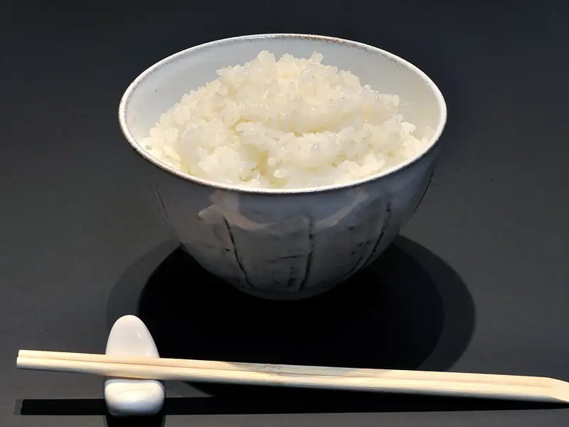

Фото: Ocdp, CC0

Рис рассыпчатый
Длиннозёрный рис на гарнир, который не слипается
25 мин4 порц.194 ккал на порциюБ 3 · Ж 3 · У 39Интернациональная кухня
Продукты на 4 порц.
- Рис1 стак.
- Вода1,5 стак.
- Соль1 ч. л.
- Растительное масло2 ч. л.
Как готовить
- Промойте длиннозёрный рис в холодной воде 5-7 раз, пока вода не станет прозрачной.
- Прогрейте масло в кастрюле с толстым дном на среднем огне, всыпьте рис и помешивайте 2 минуты, пока зёрна не станут белыми.
- Влейте горячую воду, посолите и доведите до кипения.
- Убавьте огонь до самого слабого, накройте крышкой и варите 15 минут. Не мешайте.
- Выключите огонь и дайте постоять под крышкой 10 минут, затем разрыхлите вилкой.
Совет. Для длинного риса воды 1,5 к 1 по объёму, для круглого нужно 2 к 1, и он получится мягче. Главное - хорошо промыть, крахмал склеивает зёрна.